Chapter 2 PL’s “Hello World” LED experiment#
Experimental Vivado project for “led”.
For Versal, PL (FPGA) development is crucial. This is where Versal has an advantage over other ARMs. It can customize many ARM-side peripherals. Before customizing ARM-side peripherals, let us first go through an LED example. Cheng Lai is familiar with the development process of PL (FPGA) and the basic operation of Vivado software. This development process is exactly the same as that of FPGA chips without ARM.
In this routine, what we are going to do is an LED light control experiment. We control the LED light on the development board to flip once every second to achieve on, off, on, and off control.
LED hardware introduction#
The PL part of the development board is connected to a red user LED light. This 1 light is completely controlled by PL. If PL_LED1 is high level, the three-stage tube is turned on, and the light will be on, otherwise it will be off.

Create a Vivado project#
Start Vivado. In Windows, you can start it by double-clicking the Vivado shortcut.
Click “Create New Project” in the Vivado development environment to create a new project.

A wizard for creating a new project will pop up, click “Next”

4) In the pop-up dialog box, enter the project name and the directory where the project is stored. Here we take an LED project name. Need to pay attention to the project path “Project location” cannot have Chinese spaces, and the path name cannot be too long.
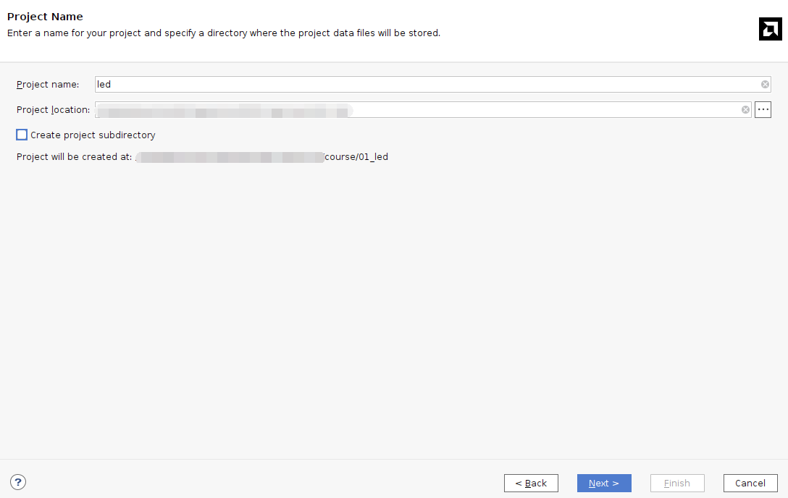Select “RTL Project” in the project type
6) Target language “Target language” select “Verilog”. Although Verilog is selected, VHDL can also be used to support multi-language mixed programming.
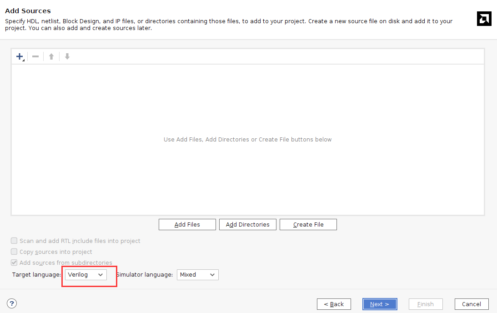Click “Next” without adding any files
Select “xc2302-sfva784-1LP-eS”

Click “Finish” to complete the creation of the future project named “led”.
Vivado software interface

Create Verilog HDL file to light up LED#
Click the Add Sources icon under Project Manager (or use the shortcut Alt+A)

Select “Add or create design sources” and click “Next”

Select “Create File”

Set the file name “File name” to “led” and click “OK”

Click “Finish” to complete adding the “led.v” file

6) In the pop-up module definition “Define Module”, you can specify the module name “Module” of the “led.v” file name”, the default here will not be “led”, you can also specify some ports, but do not specify them here for the time being, click “OK”.

Select “Yes” in the pop-up dialog box
Double-click “led.v” to open the file and then edit

9) Write “led.v”, which defines a 32-bit register timer. Used to count 0~199999999 (1 second) in a loop. When counting to 199999999 (1 second), The register timer becomes 0 and the four LEDs are toggled. In this way, if the original LED is off, it will light up; if the original LED is on, it will go out. Since the input clock is a 200MHz differential clock, the IBUFDS primitive needs to be added to connect the differential signal. The code after writing is as follows:
`timescale 1ns / 1ps module led( //Differential system clock input sys_clk_p, input sys_clk_n, input rst_n, output reg led ); reg[31:0] timer_cnt; wire sys_clk ; IBUFDS IBUFDS_inst ( .O(sys_clk), // Buffer output .I(sys_clk_p), // Diff_p buffer input (connect directly to top-level port) .IB(sys_clk_n) // Diff_n buffer input (connect directly to top-level port) ); always@(posedge sys_clk) begin if (!rst_n) begin led <= 1’b0 ; timer_cnt <= 32’d0 ; end else if(timer_cnt >= 32’d199_999_999) //1 second counter, 200M-1=199999999 begin led <= ~led; timer_cnt <= 32’d0; end else begin led <= led; timer_cnt <= timer_cnt + 32’d1; end end endmodule |
Save the code after writing it
Add pin constraints#
The constraint file format used by Vivado is xdc file. The xdc file mainly completes the pin constraints and clock constraints. and group constraints. Here we need to assign the input and output ports in the led.v program to the real pins of the FPGA.
Create a new constraint file
2)Create File
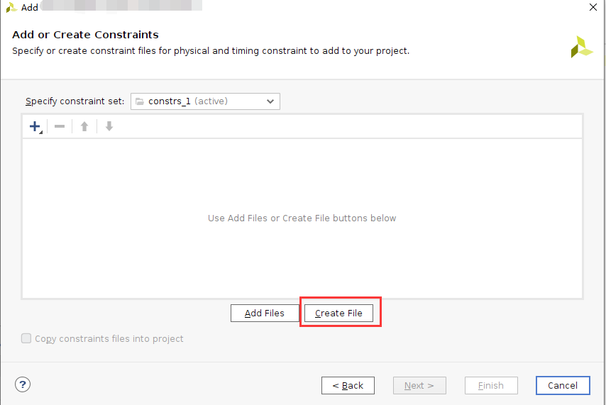 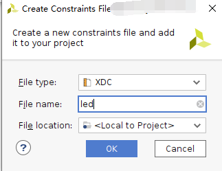Bind the reset signal rst_n to the button on the PL side, assign pins and level standards to the LED and clock, and the constraints are as follows

set_property PACKAGE_PIN AB23 [get_ports sys_clk_p] set_property PACKAGE_PIN F21 [get_ports rst_n] set_property PACKAGE_PIN E20 [get_ports led] set_property IOSTANDARD LVCMOS15 [get_ports led] set_property IOSTANDARD LVCMOS15 [get_ports rst_n] set_property IOSTANDARD LVDS15 [get_ports sys_clk_p] create_clock -period 5.000 -name sys_clk_p -waveform {0.000 2.500} [get_ports sys_clk_p] |
Generate pdi file#
1) The compilation process can be subdivided into synthesis, placement and routing, bit file generation, etc. Here we directly click “Generate Device Image”, directly generate pdi files.

In the pop-up dialog box, you can select the number of tasks, which is related to the number of CPU cores. Generally, the larger the number, the faster the compilation. Click “OK”

An error was reported during compilation.

[DRC CIPS-2] Versal CIPS exists check - wdi: Versal designs must contain a CIPS IP in the netlist hierarchy to function properly. Please create an instance of the CIPS IP and configure it. Without a CIPS IP in the design, Vivado will not generate a CDO for the PMC, an elf for the PLM.
Judging from the error report, the versa design must include CIPS, that is, the PS side, so the CIPS core needs to be added.
Select Create Block Design
 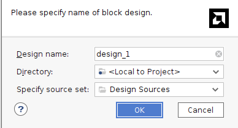
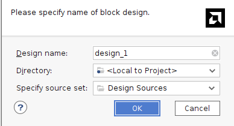
Add CIPS


Double-click CIPS, select PL_Subsystem, only the logic on the PL side

Right-click Generate Output products
Then right-click to create HDL
 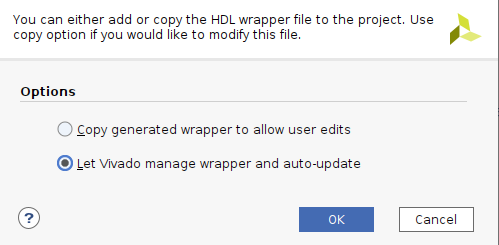
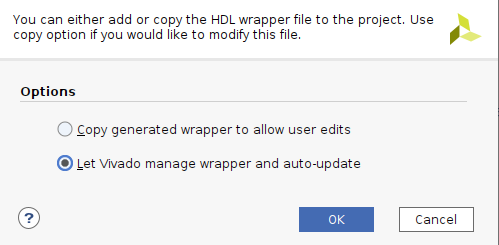
Instantiate the PS side file in led.v

10) Then Generate Bitstream, there are no errors in the compilation, the compilation is completed, a dialog box pops up allowing us to choose subsequent operations, you can select “Open Hardware Manger”, of course, you can also choose “Cancel”, we choose here “Cancel”, don’t download it yet.
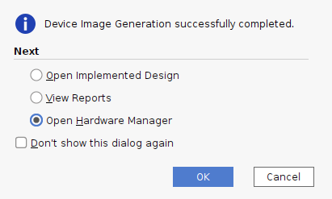Vivado simulation#
Next, we might as well try our best and use Vivado’s own simulation tool to output waveforms to verify whether the flow lamp program design results are consistent with our expectations (note: you can also simulate before generating the bit file). Specific steps are as follows:
Set the simulation configuration of Vivado, right-click Simulation Settings in SIMULATION.

2. In Simulation In the Settings window, configure as shown below. Here, set it to 50ms (set it as needed). For other settings, follow the default settings. Click OK to complete.
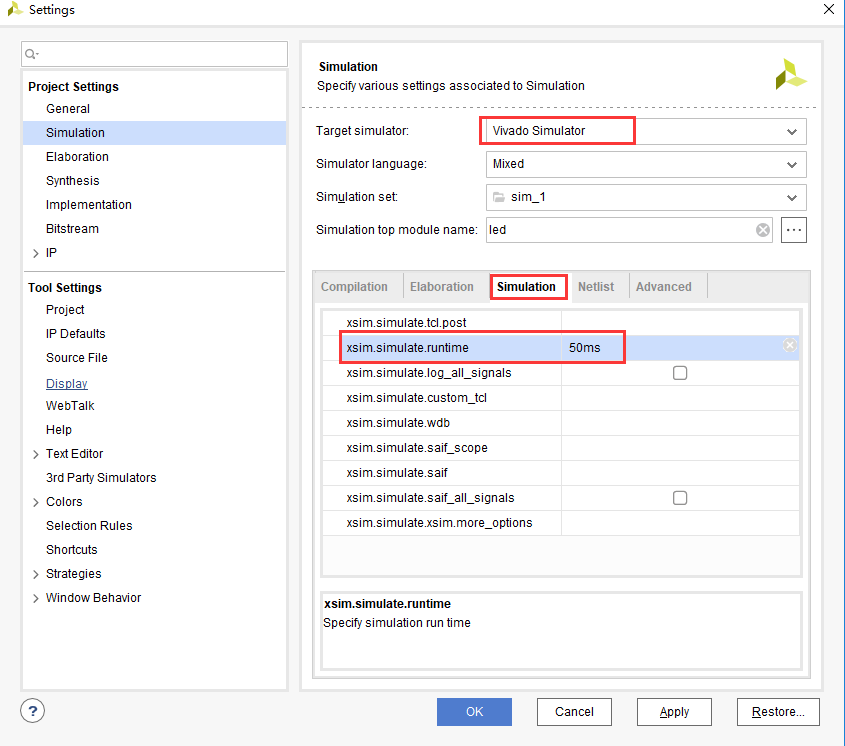Add the incentive test file and click Add under Project Manager Sources icon, click Next after setting as shown below.

Click Create File to generate the simulation stimulus file.

Enter the name of the stimulus file in the pop-up dialog box. Here we enter the name vtf_led_test.

Click the Finish button to return.

We will not add IO Ports here, click OK.

In Simulation There is an additional vtf_led_test file just added in the Sources directory. Double-click to open this file, and you can see that there is only the definition of the module name and nothing else.
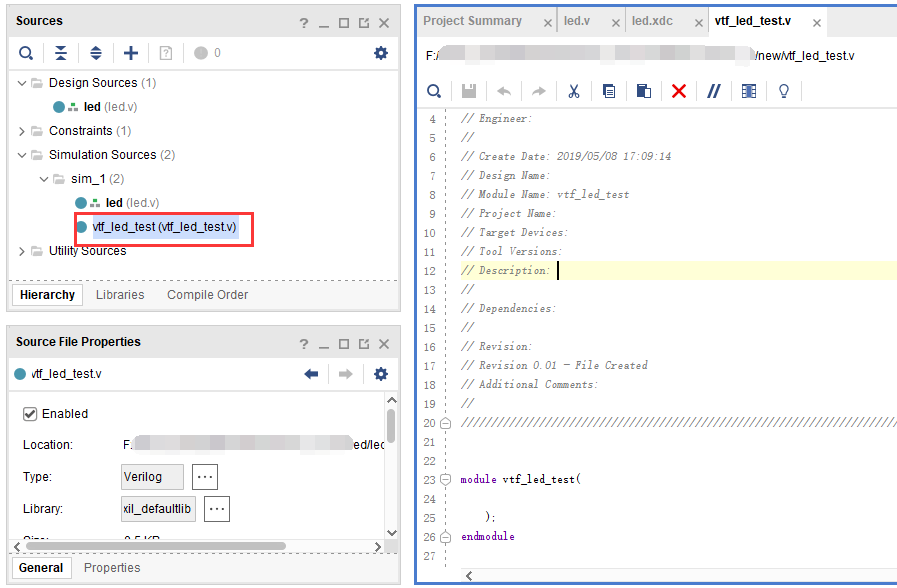Next we need to write the content of this vtf_led_test.v file. First define the input and output signals, and then instantiate the led_test module to make the led_test program part of this test program. Then add reset and clock excitation. The completed vtf_led_test.v file is as follows:
`timescale 1ns / 1ps // Module Name: vtf_led_test module vtf_led_test; // Inputs reg sys_clk_p; reg rst_n ; wire sys_clk_n; // Outputs wire led; // Instantiate the Unit Under Test (UUT) led uut ( .sys_clk_p(sys_clk_p), .sys_clk_n(sys_clk_n), .rst_n(rst_n), .led(led) ); initial begin // Initialize Inputs sys_clk_p = 0; rst_n = 0; // Wait for global reset to finish #1000; rst_n = 1; end //Create clock always #2.5 sys_clk_p = ~ sys_clk_p; assign sys_clk_n = ~sys_clk_p ; endmodule |
After writing, save, vtf_led_test.v automatically becomes the top level of this simulation Hierarchy, and below it is the design file led_test.v.

Click the Run Simulation button and select Run Behavioral Simulation. Here we can just do behavioral level simulation.

If there are no errors, the simulation software in Vivado starts working.
After the simulation interface pops up, as shown below, the interface is the waveform of 50ms when the simulation software automatically runs to the simulation setting.

Since the state change time of LED[3:0] designed in the program is long, and the simulation is relatively time-consuming, we observe the changes of the timer[31:0] counter here. Put it into Wave and observe it (click uut under the Scope interface,Then right-click and select timer under the Objects interface, and select Add Wave in the pop-up drop-down menu.Window).
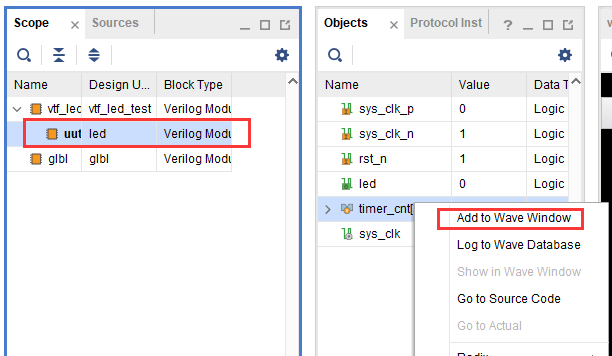After adding, the timer is displayed on the Wave interface, as shown in the figure below.

Click the Restart button marked below to reset, and then click RunAll button. (Patience is required!!!), you can see that the simulation waveform is consistent with the design. (Note: The longer the simulation time, the greater the disk space occupied by the simulated waveform file. The waveform file is in the xx.sim folder of the project directory)
 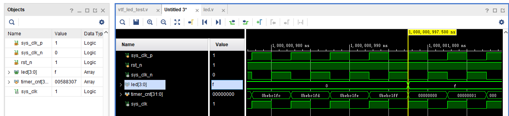
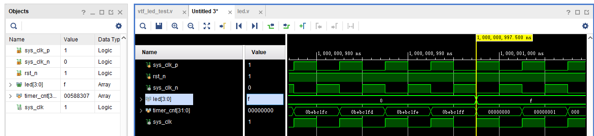
We can see that the LED signal will change to 1, indicating that the LED light will brighten.
download#
Connect the JTAG interface of the development board and power on the development board. Note that the pull-out switch must select JTAG mode, that is, pull all the switches to “ON”. The value represented by “ON” is 0. If JTAG mode is not used, an error will be reported when downloading. .

Click “Auto Connect” on the “HARDWARE MANAGER” interface to automatically connect to the device

Select the chip, right-click “Program Device…”

Click “Program” in the pop-up window

Wait for download

6) After the download is completed, we can see the PL The LED starts changing every second. At this point, the Vivado simple process experience is completed. Later chapters will introduce that if you burn the program to Flash, you need the cooperation of the PS system to complete it. Only PL projects cannot directly burn Flash. Hello in “Experience ARM, Bare Metal Output” It is introduced in the FAQ in the chapter “World”.
Experiment summary#
This chapter introduces how to develop programs on the PL side, including project establishment, constraints, simulation and other methods. You can refer to this method in subsequent code development methods.